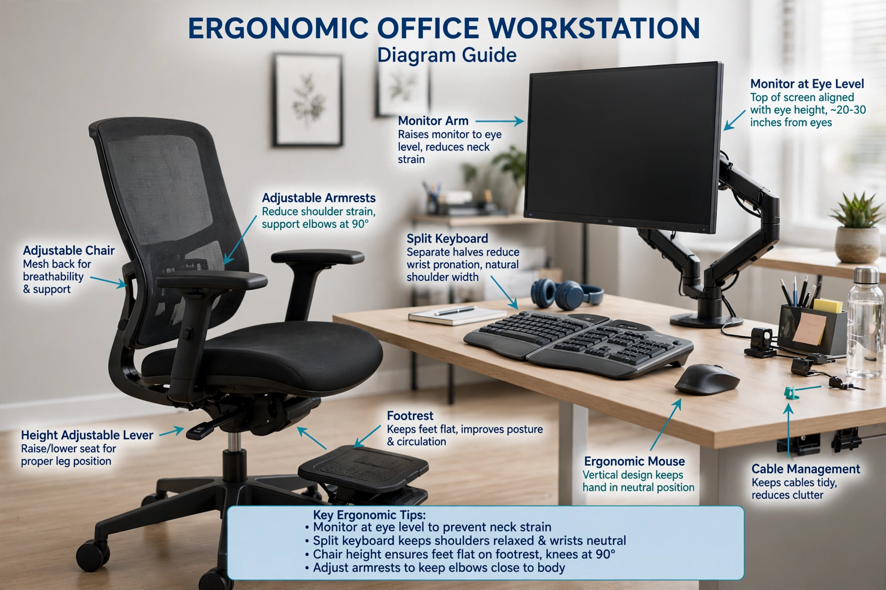

| Ergonomics | |
|---|---|
| Also called | Human factors engineering |
| Focus | Interaction between humans and elements of a system |
| Domains | Physical, cognitive, organisational ergonomics |
| Body | International Ergonomics Association (IEA) |

Ergonomics, also known as human factors or human factors engineering (HFE), is the application of psychological and physiological principles to the engineering and design of products, processes, and systems. Primary goals of human factors engineering are to reduce human error, increase productivity and system availability, and enhance safety, health and comfort with a specific focus on the interaction between the human and equipment.
According to the International Ergonomics Association, the discipline has three broad domains: physical ergonomics, concerned with human anatomical, anthropometric and biomechanical characteristics as they relate to physical activity; cognitive ergonomics, concerned with mental processes such as perception, memory and reasoning; and organisational ergonomics, concerned with the optimisation of sociotechnical systems.
The term was coined by the Polish scholar Wojciech Jastrzębowski in 1857. The field expanded rapidly during the Second World War, when the design of aircraft cockpits and other military equipment highlighted the need to take human capabilities and limitations into account. Modern ergonomics informs workplace design, consumer products, transport safety and human–computer interaction.
See also: Human factors · Anthropometry · Occupational safety and health